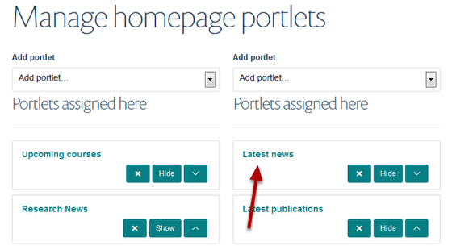
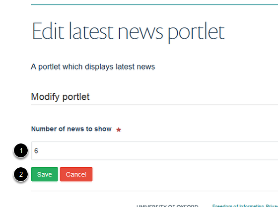

Homepage - Change the Number of News Items on Display
You can choose how many news items you would like to display on your homepage. This shows you how to do this.
Homepage Portlets
Go to the homepage and click on Portlets on the tool bar at the top of the page.
Find Latest news portlet

Click on the Latest news portlet.
Change number of news items

- Enter the number of news items you would like to display on the homepage in the box.
- Click on Save.